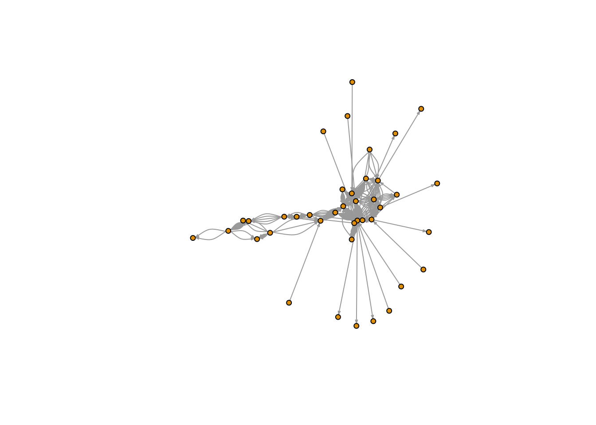

Lab 1
Libraries we will use (install if necessary):
install.packages("readr")
install.packages("igraph")
install.packages("dplyr")
install.packages("raster")
install.packages("scales")
install.packages("intergraph")
install.packages("network")
install.packages("RColorBrewer")
install.packages("tidygraph")1 Network visualization
1.1 Loading the data and visualizing the network
library(dplyr)
library(scales)
library(ggplot2)
library(ggraph)
# Libraries for network objects
library(igraph)
library(tidygraph)
# Loading the data from the STNet package
node <- STNet::SwinePrem
edge <- STNet::SwineMovWe use the function graph_from_data_frame() to create the network from a data.frame. This function takes as arguments:d which requires the contacts data, vertices which is the data of the nodes (farms in our example), and directed which specifies if we want to consider the direction of the contact.
# Create the network
net <- graph_from_data_frame(d=edge, vertices=node, directed=T)
# We can examine the contents of the network using the function summary()
summary(net)## IGRAPH 62b060b DN-- 40 1611 --
## + attr: name (v/c), lat (v/n), long (v/n), farm_type (v/c), date (e/c),
## | pigs.moved (e/n), type_orig (e/c), type_dest (e/c)The result will show a summary of the network. The first line shows that is an object class igraph with 40 nodes and 1611 contacts (edges). Then we have a list of all the attributes of the network. The network attributes can be node attributes (n) or edge attributes (e).
Here we can also see the attribute class:
- c = character.
- n = numeric.
For example, the attribute “name(v/c)” its a node attribute of class character, and the attribute “pigs.moved (e/n)” is an attribute of the edge of class numeric.
To visualize the network we can use the function plot().
#plot network#
#for help look look for: ?plot.igraph#
plot(net)
This figure looks a bit messy, to make it more informative we can visualize dome of the parameters. We use the arguments edge.arrow.size to adjust the size of the arrowhead, vertex.size to adjust the node size, and vertex.label to remove the names of the nodes.
#make it clearer: adjust size, remove labels#
plot(net, edge.arrow.size=0.2, vertex.size=4, vertex.label=NA)
Exercise: Change the size of the nodes and the arrows to make a different graph.
1.2 Node color
We can get specific attributes from the igraph object using V() for nodes, and E() for edges.
The same way we do for a data.frame, we can create new attributes of the network using the $ operator and assigning a name to a new variables. Now we will create a new variable for the node color.
# Create a color palette
colpal <- RColorBrewer::brewer.pal(length(levels(node$farm_type)),
"Dark2")
colpal <- rainbow(length(levels(node$farm_type)), s = 0.6)
# Assign a new variable for the color:
V(net)$color <- colpal[factor(V(net)$farm_type)]
#plot with colors
#vertex.color assigns colors by calling to the newly created "color" or "color2" variables that are now in the vertex (so node) dimension of the network#
#the vertex dimension is called to by naming it V(net)#
plot(net, edge.arrow.size=0.2, vertex.size=4, vertex.color=V(net)$color, vertex.label=NA)
legend("bottomleft", legend = levels(factor(V(net)$farm_type)), col = colpal, pch = 16, bty = "n")
1.3 Layouts
We can change the position of the nodes using the argument layout. Now we will use different layouts to see how the network changes.
#layout_randomly uses a random location
plot(net, edge.arrow.size=0.2, vertex.size=4, vertex.color=V(net)$color, vertex.label=NA, layout=layout_randomly)
legend("bottomleft", legend = levels(factor(V(net)$farm_type)), col = colpal, pch = 16, bty = "n")
Force directed layouts place the nodes in fixed places based on various criteria. The layouts layout_nicely and layout_with_kk force the network in clear layouts, based on the position of the nodes in the network in terms of connectivity. They also attempt to keep the distance between connected nodes fixed.
par(mfrow = c(1,2))
plot(net, edge.arrow.size=0.2, vertex.size=4, vertex.color=V(net)$color, vertex.label=NA, layout=layout_with_kk)
#the following layouts force nodes to adopt certain shapes#
plot(net, edge.arrow.size=0.2, vertex.size=4, vertex.color=V(net)$color, vertex.label=NA, layout=layout_in_circle)
Excercise: Try different layouts: layout_nicely, layout_with_graphopt, layout_as_star, layout_with_fr, layout_on_grid.
1.4 Size of the edge
# We will change the edge size based on the number of aimals moved
E(net)$width <- E(net)$pigs.moved
plot(net, edge.arrow.size=0.2, vertex.size=4, vertex.color=V(net)$color, vertex.label=NA, layout=layout_with_kk)
# Since the edgge sizes are very large, we will constrain the edge size based on a scale using the package scales
E(net)$width <- scales::rescale(E(net)$pigs.moved, c(0.2, 3))
plot(net, edge.arrow.size=0.2, vertex.size=4, vertex.color=V(net)$color, vertex.label=NA, layout=layout_with_kk)
1.5 Node size
We will use the indegree value to assign the node size. First we will calculate indegree using the function degree() with the argument mode = "in", and we will also get rid of the loops.
#Calculate the indegree
#mode lets you choose between "in", "out" and "all" for the type of degree
#loops=FALSE removes internal farm shipments
V(net)$indegree <- degree(net,v=V(net),mode=c("in"), loops=FALSE)
#plot the network by adding the vertex.size argument
plot(net, edge.arrow.size=0.2, vertex.size=V(net)$indegree, vertex.color=V(net)$color, vertex.label=NA, layout=layout_with_kk)
As you can see, there is one node that receives a lot of movements and you cant really see the edges of the network.
Excercise: since the node size is too large, rescale the values of the node size so you can see the eddges of the network.
We can also obtain the outdegree using the argument mode = "out" side the function degree().
#give weight to node: outdegree#
#same steps with outdegree#
V(net)$outdegree <- degree(net,v=V(net),mode=c("out"), loops=FALSE)Excercise: Now change the node size using the outdegree value.
# Now we will calculate the betweeness and use the network to visualize it
# We use the argument directed=T to consider the directionality of the movement
bet <- betweenness(net, v=V(net), directed=TRUE)
# We make sure that we reascale it so we can see the edges
V(net)$size <- scales::rescale(bet, c(5, 15))
plot(net, edge.arrow.size=0.2, vertex.size=V(net)$size, vertex.color=V(net)$color, vertex.label=NA, layout=layout_with_kk)
2 Using other packages to plot the network
Besides igraph, there are other packages to plot the network in R. The package network() provides almost the same functions that igraph for plotting, but igraph has more functions for network statistics. To switch between the formats, there is a package calls intergraph() which provides functions to going from an igraph object to a network object and the other way.
2.1 network package
Here we will use the package network() to plot a network with the names scaled to the number of neighbors.
# First we obtain the number of neighbors for each node
V(net)$nb <- neighborhood.size(net)
# then we switch the format to the network package
G <- intergraph::asNetwork(net)
# Now we plot the network
plot(G, # The name of the network
displaylabels = T, # We want to show labels
label.cex = rescale(V(net)$nb, to = c(0.001, 1.5)),# We use the number of neighbors to scale the size
vertex.cex = 0.001, # Reduce the node size so we dont see it
arrowhead.cex = 0.001, # reduce the arrowhead size
label.pos = 5, # the position of label (5 = center)
edge.col = "lightgreen") # Edge color
2.2 ggraph
Other option for plotting is the package ggraph which uses the same syntax than ggplot.
net %>%
as_tbl_graph() %>%
ggraph(layout = 'kk') +
geom_edge_link(aes(alpha = pigs.moved)) + # change the transparency based on number of animals moved
geom_node_point(aes(col = farm_type, size = indegree)) + # size based on indegree
theme_void()
2.3 Interactive visualization using networkD3
The package networkD3 offer some interesting visualization options. This package uses javascript to create interactive visualizations so we need to start our indexing at 0 and not at 1 for the edges. for this we will substract 1 to the edges indexing
# Loading the library
library(networkD3)
# SUbstract 1 from the indexing of the nodes
edge_s <- edge %>%
count(id_orig, id_dest) %>%
mutate(id_orig = id_orig - 1, id_dest = id_dest - 1)
# Plot a simple network
simpleNetwork(edge_s)We can also add more information to our network such as the name, type of node and size of the edges.
# Plot
forceNetwork(Links = edge_s, Nodes = node,
Source = "id_orig", Target = "id_dest",
Value = "n", NodeID = "name",
Group = "farm_type", opacity = 0.8)Another interesting visualization from this package are the Sankey Networks. THis type of visualizations can be very helpful to se the flow of the movements. The height of the rectangles will represent the indegree, and the shaded line between two nodes represent the number of movements between a pair of nodes
# Plot
sankeyNetwork(Links = edge_s, Nodes = node, Source = "id_orig",
Target = "id_dest", Value = "n", NodeID = "name",
fontSize = 12, nodeWidth = 30)3 Calculating euclidean distance
We can also use the spatial location of the nodes to calculate the distance between a movement. To represent this distance we use euclidean distance, which is the distance using a straight line between two locations.
We will use the package raster for this part, so make sure its installed.
library(raster)## Loading required package: sp##
## Attaching package: 'sp'## The following object is masked from 'package:ggraph':
##
## geometry##
## Attaching package: 'raster'## The following object is masked from 'package:tidygraph':
##
## select## The following object is masked from 'package:dplyr':
##
## select# First we need to include the information of origins and destination
edge <- edge %>%
left_join(node[c("id", "lat", "long")], by = c("id_orig" = "id")) %>%
rename(O_Lat = lat, O_Long = long) %>%
left_join(node[c("id", "lat", "long")], by = c("id_dest" = "id")) %>%
rename(D_Lat = lat, D_Long = long)
# Now we calculate the distance
edge$dist <- pointDistance(p1 = edge[c("O_Long", "O_Lat")], # Origin coordinates
p2 = edge[c("D_Long", "D_Lat")], # Destination coordinates
lonlat = T)
# We convert from m to km
summary(edge$dist/1000)## Min. 1st Qu. Median Mean 3rd Qu. Max.
## 24.55 178.00 229.16 223.15 247.91 472.95# We can see the quantiles:
quantile(edge$dist/1000, c(0.05,0.95))## 5% 95%
## 104.6104 472.9462# Lets look the distribution of distances
hist(edge$dist/1000,
xlim=range(0,500),
breaks=20,
main = "Distribution of euclidean distance (Km)", xlab="distance (km)")
boxplot(edge$dist/1000,
ylim=c(0,500),
main = "Boxlot of euclidean distance (Km)", ylab="distance (km)")
Now we will add the network statistics to the data.frame so we can use them later.
node <- node %>%
mutate(indegree = V(net)$indegree, outdegree = V(net)$outdegree, nb = V(net)$nb, Bet = bet)Finally we will export the network as a RDS file so we can load it in another session.
# we can export the network as a RDS object using the package readr
readr::write_rds(net, "Data/Outputs/net.rds")
# We will also export the edges with the distance and coordinates
write.csv(edge, "Data/Outputs/edge.csv", row.names = F)
write.csv(node, "Data/Outputs/node.csv", row.names = F)